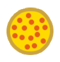

About Project
Star
Search Recipes
Sort
Calories: Low to High
Calories: High to Low
Protein: Low to High
Protein: High to Low
Carbs: Low to High
Carbs: High to Low
Fat: Low to High
Fat: High to Low
Sort
Find some recipes

Search Recipes
Nutrition
Diet Type
Meal Type